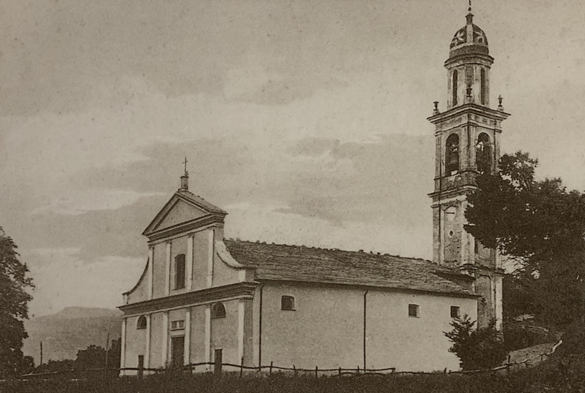
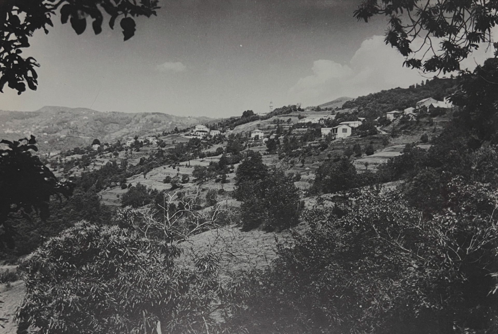

Galleria Fotografica
Scopri la bellezza paesaggistica e il patrimonio di Scurtabò attraverso la nostra raccolta fotografica. Ogni immagine racconta una storia della nostra frazione.

Chiesa di Scurtabò
Il simbolo religioso e culturale della frazione

Panorama di Scurtabò
Una vista suggestiva del territorio ligure
Condividi le Tue Foto
Se possiedi fotografie di Scurtabò che desideri condividere con la comunità, siamo interessati a riceverle. Contattaci per aggiungere le tue immagini alla nostra galleria!